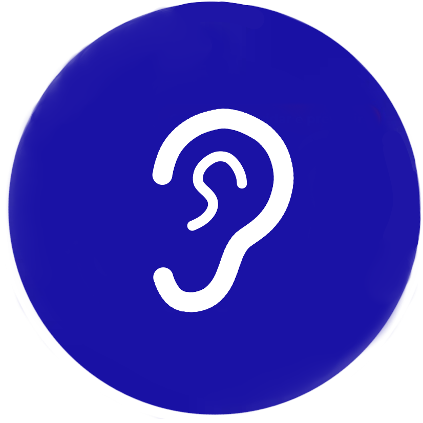
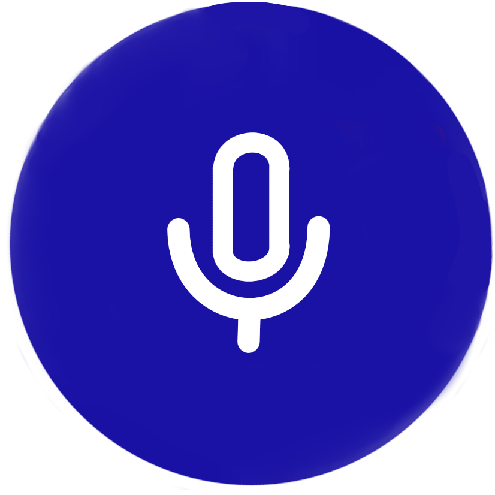
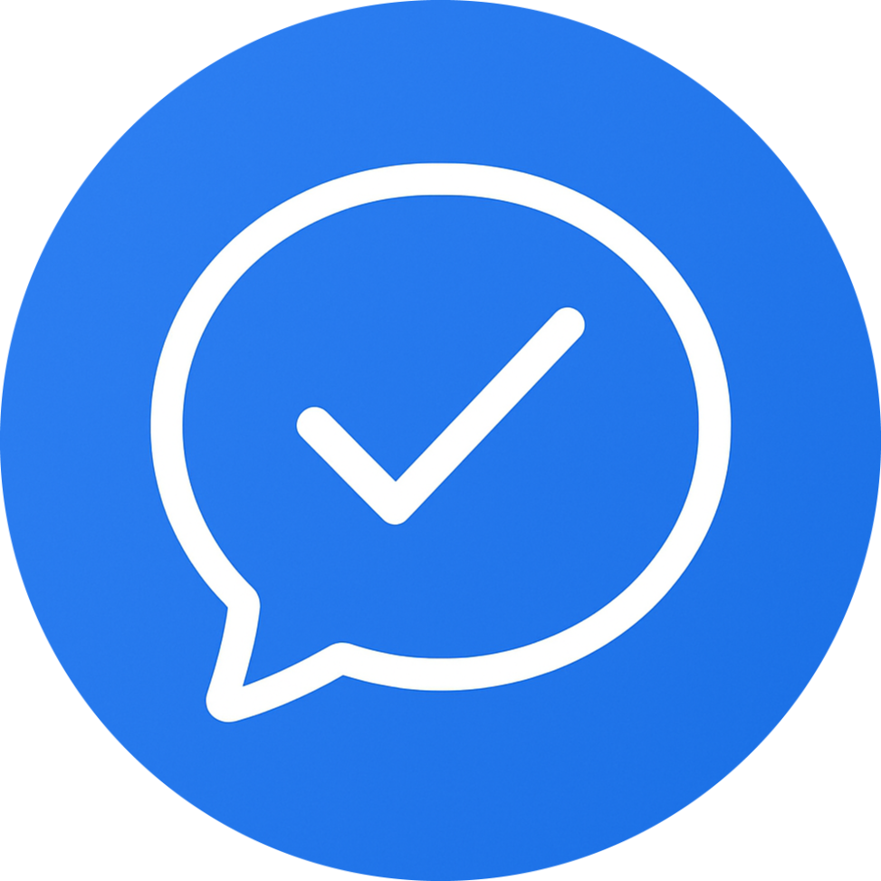
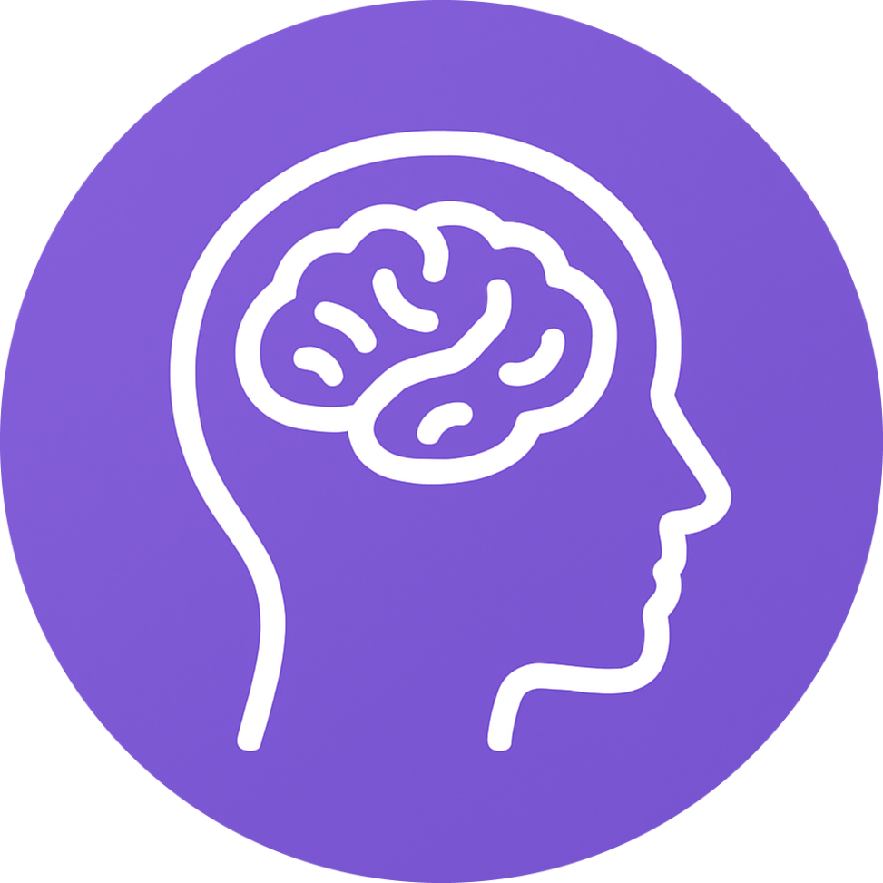
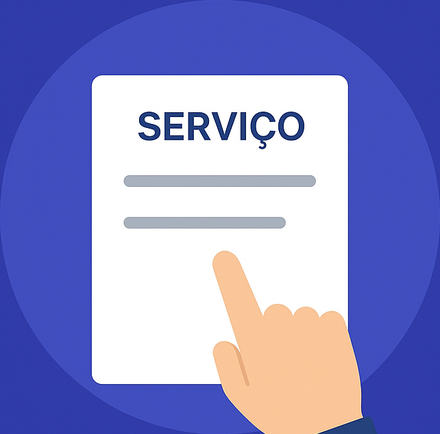

Você sabia?
Muitos atores, cantores e jornalistas fazem terapia com um Fonoaudiólogo?
Eles buscam o profissional para aprimorar a dicção, melhorar a projeção da voz e prevenir o aparecimento de lesões, como os famosos calos vocais. A voz é uma ferramenta de trabalho que precisa de cuidados!
Veja também
O Curso de Fonoaudiologia
A graduação é completa e multidisciplinar. Você sabia que ela envolve o estudo de:
- Neurociências: Entender como o cérebro processa a comunicação.
- Audiologia: Diagnóstico e reabilitação auditiva.
- Anatomia: Estudo dos órgãos envolvidos na fala, voz e deglutição.
- Linguagem Escrita: Atuação em dislexia e dificuldades de aprendizado.
É uma formação que te prepara para atuar em hospitais, clínicas, escolas e empresas!
O que é Fonoaudiologia?
A Fonoaudiologia é a área da saúde que estuda e trabalha com a comunicação humana, desde sua prevenção até a avaliação, diagnóstico e tratamento de distúrbios relacionados à fala, à linguagem, à voz, à audição, à deglutição e à motricidade orofacial. Em outras palavras, o fonoaudiólogo é o profissional responsável por ajudar pessoas de todas as idades a se comunicar melhor e a ter uma boa funcionalidade das estruturas envolvidas na fala, audição e alimentação.
Linguagem: dificuldades de comunicação oral ou escrita (como atrasos na fala, gagueira, afasia, dislexia etc.);
Voz: prevenção e tratamento de alterações vocais (muito comum em professores, cantores e comunicadores);
Audição: avaliação e reabilitação auditiva, incluindo adaptação de aparelhos auditivos;
Motricidade orofacial: tratamento de problemas na mastigação, deglutição, respiração e articulação dos sons;
Disfagia: dificuldades para engolir alimentos, comuns em pessoas com doenças neurológicas;
Fonoaudiologia educacional: acompanhamento de alunos com dificuldades de aprendizagem e orientação a escolas;
Fonoaudiologia hospitalar: atuação em UTIs e enfermarias com pacientes que precisam recuperar fala ou deglutição após doenças ou cirurgias.
Principais áreas de atuação da Fonoaudiologia:
Curso de Fonoaudiologia
O curso de Fonoaudiologia vai muito além de ensinar sobre fala e audição ele é sobre comunicação, expressão e conexão humana. É a formação de quem aprende a escutar com atenção, compreender com sensibilidade e ajudar pessoas a redescobrirem a própria voz. Durante a graduação, o aluno mergulha em temas como linguagem, voz, audição, motricidade orofacial e deglutição. Aprende como o corpo, o cérebro e as emoções trabalham juntos para que possamos nos comunicar e como intervir quando algo nesse processo se desequilibra. Ao longo dos quatro anos de formação, teoria e prática caminham lado a lado: o estudante participa de atendimentos reais, experiências clínicas e estágios em escolas, hospitais e clínicas especializadas.
Crianças a dizerem suas primeiras palavras;
Adultos a recuperarem a voz ou a audição;
Idosos a se comunicarem com clareza;
Profissionais da voz a cuidarem do instrumento mais importante do trabalho: ela mesma.
O fonoaudiólogo é quem ajuda:
Fonoaudiologia para Pessoas com Deficiência
Comunicar é um direito de todos. A Fonoaudiologia para Pessoas com Deficiência tem como missão garantir que toda forma de comunicação seja possível, seja pela fala, pelos gestos, pela escrita, pelos sons ou por meios alternativos. O fonoaudiólogo atua para desenvolver, ampliar ou adaptar as habilidades de comunicação, audição, linguagem e deglutição de pessoas com deficiências físicas, intelectuais, sensoriais ou múltiplas. Cada atendimento é único, respeitando as necessidades, os limites e, principalmente, o potencial de cada indivíduo.
Estimula a fala e a linguagem em pessoas com atraso no desenvolvimento;
Trabalha a compreensão e expressão por meio de Comunicação Alternativa e Aumentativa (CAA);
Apoia o uso de aparelhos auditivos e implantes cocleares;
Reabilita dificuldades de deglutição e motricidade orofacial;
Promove autonomia e inclusão em ambientes escolares, familiares e sociais.
Como o fonoaudiólogo ajuda:
Áreas de Atuação

Audiologia
Atua na recuperação de distúrbios auditivos, realizando avaliação, diagnóstico, reabilitação e adaptação de aparelhos auditivos, proporcionando melhor qualidade de vida e comunicação.
Linguagem
Trabalha a comunicação oral e escrita, identificando e tratando distúrbios no desenvolvimento da fala e linguagem, como atraso de fala, dislexia, afasia e outros problemas relacionados.
Motricidade Orofacial
Reabilita funções relacionadas à respiração, mastigação, deglutição e expressão facial, melhorando articulação da fala e qualidade de vida do paciente.

Voz
Avalia, previne e trata distúrbios vocais, auxiliando profissionais que usam intensamente a voz, como professores, cantores e locutores, para recuperar e aprimorar sua comunicação vocal.
Disfagia
Especialidade que trata distúrbios da deglutição em todas as idades, ajudando a engolir com segurança e prevenindo complicações como desnutrição, desidratação e pneumonia aspirativa.
Saúde Coletiva
Desenvolve ações preventivas e educativas em comunidades, escolas e instituições, promovendo a saúde da comunicação, audição e voz em nível coletivo e prevenção de distúrbios.
Fonoaudiologia Educacional
Atua no ambiente escolar, promovendo desenvolvimento da leitura, escrita e fala. Colabora com professores e alunos para melhorar aprendizagem e comunicação na escola.
Gerontologia
Focada no atendimento a idosos, reabilita funções da fala, audição e deglutição, promovendo a manutenção da comunicação e qualidade de vida na terceira idade.
Neurofuncional
Avalia e reabilita alterações fonoaudiológicas decorrentes de lesões ou disfunções do sistema nervoso. Atende casos como AVC, traumatismos e paralisia cerebral, buscando restaurar ou adaptar comunicação e deglutição.

Fluência
Trata dificuldades no fluxo da fala, como a gagueira, desenvolvendo uma comunicação mais natural e segura, trabalhando aspectos motores e emocionais da fala.
Fonoaudiologia do Trabalho
Foca na saúde vocal e auditiva de profissionais expostos a ruídos ou que utilizam a voz intensamente, atuando na prevenção e promoção da saúde ocupacional e qualidade vocal.

Neuropsicologia
Estuda a relação entre cérebro e funções cognitivas que sustentam a comunicação, avaliando e reabilitando distúrbios de linguagem, memória, atenção e funções executivas.
Perícia Fonoaudiológica
Atua na interface entre Fonoaudiologia e Direito, emitindo laudos e pareceres técnicos em casos de acidentes, erros médicos e disputas de paternidade, com base científica e técnica.
Hospitalar
Atende pacientes internados com dificuldades de fala, voz e deglutição, promovendo reabilitação, suporte durante tratamentos médicos e melhorando comunicação e bem-estar.

1. Insira seus Dados
2. Selecione seu Serviço
3. Insira Dados Adicionais
4. Agendamento Concluido